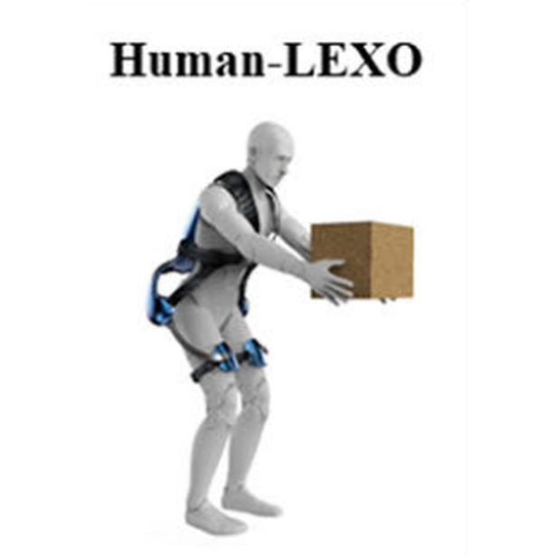
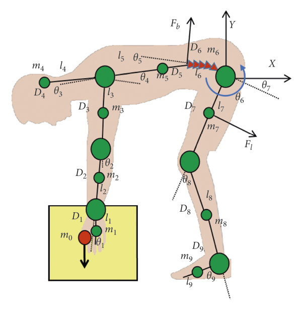

Xinyu Ji
I am presently employed as a Robot Learning Algorithm Engineer at the Innovation Institute, Cethik Group Co., Ltd.
I hold an M.S. in Mechanical Engineering from Wuhan University of Technology. During my studies, I was a visiting student and research intern at the Chinese Academy of Sciences’ Shenzhen Institutes of Advanced Technology, supervised by Prof. Xinyu Wu.
I’m a full-stack engineer dedicated to harmoniously integrated human–machine systems, realized through exoskeletons and supernumerary (extra) limbs that augment coupled human–machine physical capability. Toward this goal, I focus on: (a) Musculoskeletal-informed mechanisms and wearable hardware for exoskeletons and extra-limb systems via data-driven co-design; (b) Unifying learning with planning, estimation, and motor control for deployable augmentation and robust in-the-loop behavior.
GitHub
ResearchGate
2024
Published in IEEE Transactions on Neural Systems and Rehabilitation Engineering (TNSRE): Effect Analysis of Wearing an Lumbar Exoskeleton on Coordinated Activities of the Low Back Muscles Using sEMG Topographic Maps. (paper, ResearchGate)2021
Graduated with an M.S. in Mechanical Engineering from Wuhan University of Technology.2020
Published in Complexity: SIAT-WEXv2: A Wearable Exoskeleton for Reducing Lumbar Load during Lifting Tasks. (paper, ResearchGate)
Effect Analysis of Wearing an Lumbar Exoskeleton on Coordinated Activities of the Low Back Muscles Using sEMG Topographic Maps
Naifu Jiang, Dashuai Wang, Xinyu Ji, Lin Wang, Xinyu Wu, Guanglin Li
IEEE Transactions on Neural Systems and Rehabilitation Engineering (TNSRE), 2024
DOI •
ResearchGate

SIAT-WEXv2: A Wearable Exoskeleton for Reducing Lumbar Load during Lifting Tasks
Xinyu Ji, Dashuai Wang, Pengfei Li, Liangsheng Zheng, Jianquan Sun, Xinyu Wu
Complexity, vol. 2020, 2020
DOI •
ResearchGate